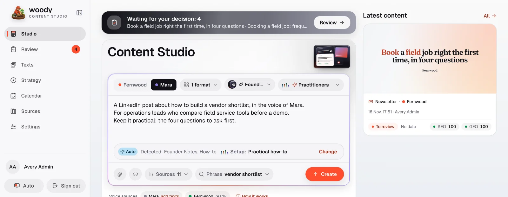
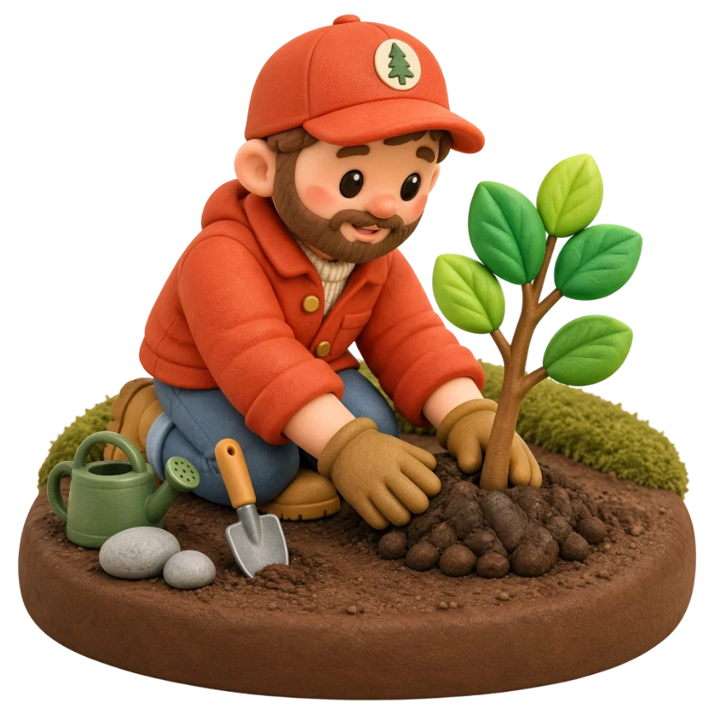
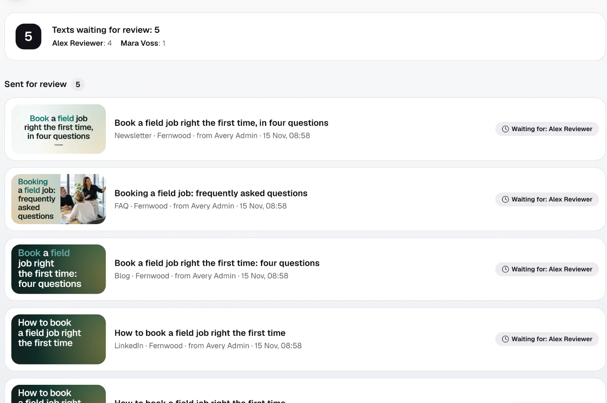
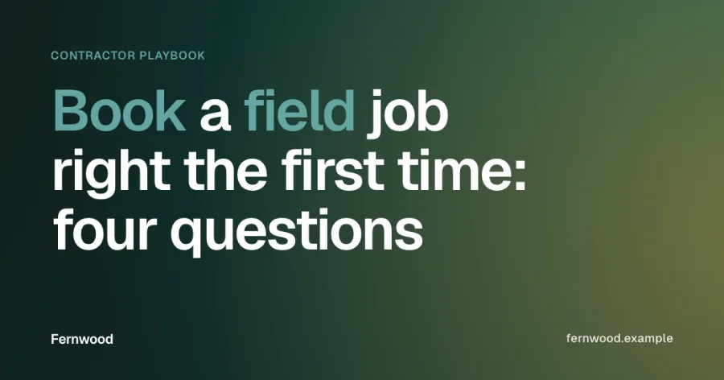
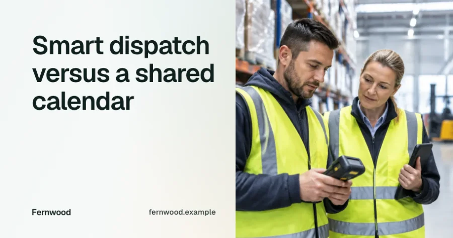
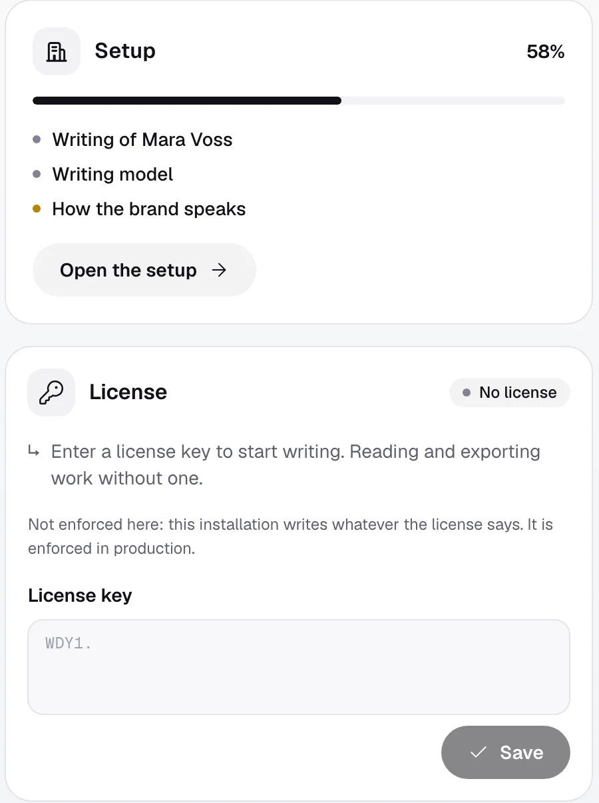

Set up in five steps
Company, look, voices, sources, team. Give it your website address and it proposes colours, fonts and pages.
Content studio
Type what you need. Woody writes it from your sources and scores it for search and for AI answers. Then a person approves it.
Not on sale yet. Runs on your own server.


01 The request
Say what you need, like “a LinkedIn post about why a case study needs a number”. Woody picks the format, the length and the sources, and shows you what it picked. Change anything before you press Create.
02 The result
SEO asks whether a search engine can find the text. GEO asks whether an AI assistant can quote it. A text that misses is corrected, up to two times.
These are the scores of a sample FAQ in the Fernwood demo, a made up company.
03 The review
Each text waits for the reviewer you assigned. They approve it, or send it back with a note. Only approved texts reach the calendar.



04 The covers
Woody draws each cover in your colours and fonts, and adds a person when the topic fits. It picks from 27 generated photos, or from your own. None is a real customer.

05 Yours
Woody is a package you run yourself. Your texts, their history and your keys stay on your machine.
Company, look, voices, sources, team. Give it your website address and it proposes colours, fonts and pages.
One package, with Node.js or Docker. Keys stay on the server. The database is backed up every 23 hours.
Woody turns read only: texts stay readable and exportable. An online license sends four counters, never text.
Plain answers
No. Without a key you can browse and edit. You bring your own key, so the cost stays on your account. You set the monthly limit.
Claude first, Gemini second, both with your own key. This page was prepared from the documentation and from test runs with stand-ins, not from a live model.
English or Slovak, chosen from the language of your request. The interface is in English.
No. An approved text goes to the calendar, and you export it or save it to Google Docs.
The people you add to your team. Woody runs on your server, so your texts stay there.
Not on sale yet
Send one short email and you are on the list. I will write to you once, when Woody opens.
The button opens your own email program with a message you can read and change. This page collects nothing and loads nothing from other sites.